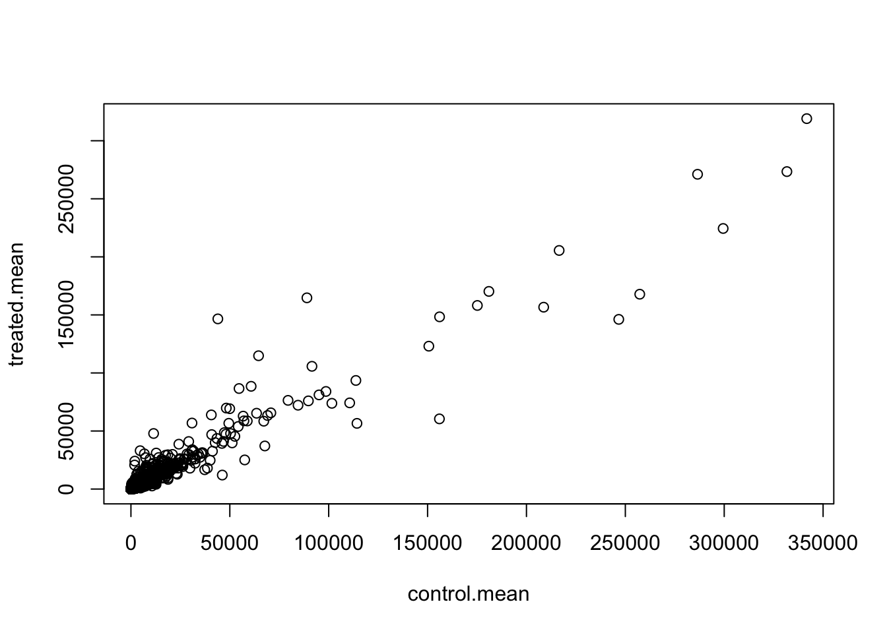
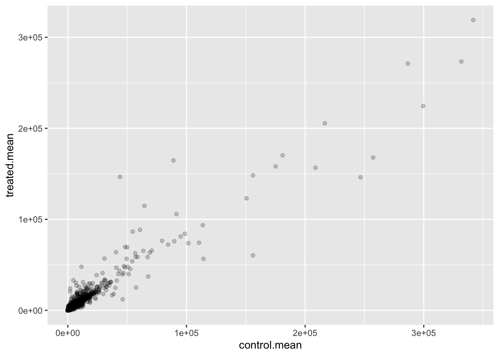
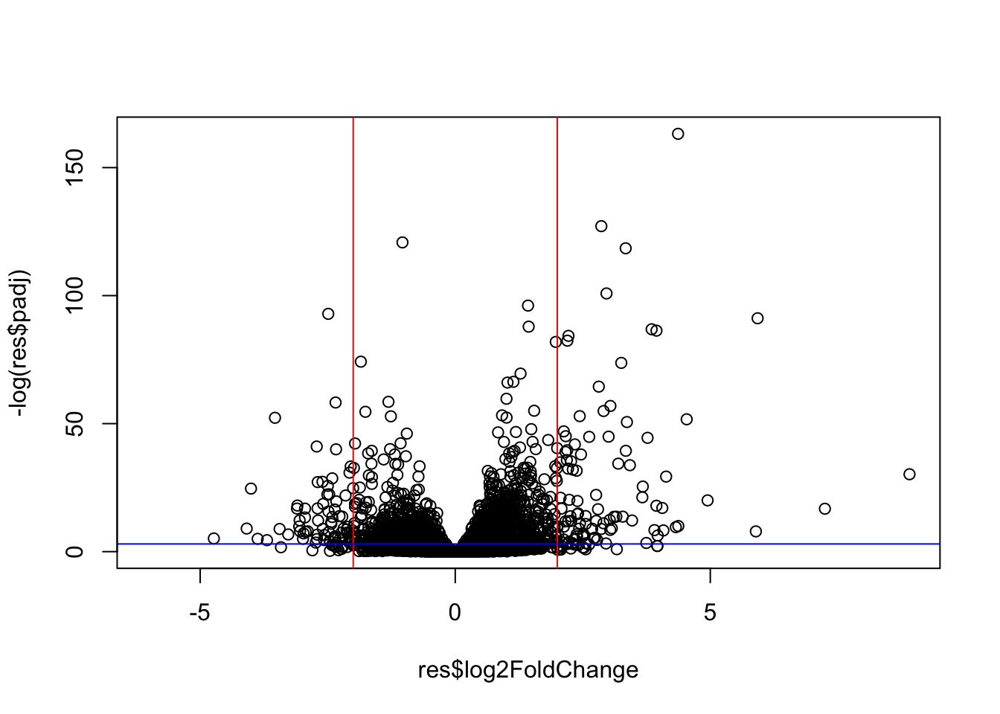

count <- read.csv("airway_scaledcounts.csv", row.names = 1)
metadata <- read.csv("airway_metadata.csv")
head(count) SRR1039508 SRR1039509 SRR1039512 SRR1039513 SRR1039516
ENSG00000000003 723 486 904 445 1170
ENSG00000000005 0 0 0 0 0
ENSG00000000419 467 523 616 371 582
ENSG00000000457 347 258 364 237 318
ENSG00000000460 96 81 73 66 118
ENSG00000000938 0 0 1 0 2
SRR1039517 SRR1039520 SRR1039521
ENSG00000000003 1097 806 604
ENSG00000000005 0 0 0
ENSG00000000419 781 417 509
ENSG00000000457 447 330 324
ENSG00000000460 94 102 74
ENSG00000000938 0 0 0head(metadata) id dex celltype geo_id
1 SRR1039508 control N61311 GSM1275862
2 SRR1039509 treated N61311 GSM1275863
3 SRR1039512 control N052611 GSM1275866
4 SRR1039513 treated N052611 GSM1275867
5 SRR1039516 control N080611 GSM1275870
6 SRR1039517 treated N080611 GSM1275871nrow(count)[1] 38694table(metadata$dex)
control treated
4 4 control.mean <- rowMeans(count[, metadata$dex == "control"])
treated.mean <- rowMeans(count[, metadata$dex == "treated"])
meancount <- data.frame(control.mean,treated.mean)
head(meancount) control.mean treated.mean
ENSG00000000003 900.75 658.00
ENSG00000000005 0.00 0.00
ENSG00000000419 520.50 546.00
ENSG00000000457 339.75 316.50
ENSG00000000460 97.25 78.75
ENSG00000000938 0.75 0.00plot(meancount)
library(ggplot2)
ggplot(meancount) +
aes(control.mean, treated.mean) +
geom_point(alpha=.2)
plot(meancount, log = "xy")Warning in xy.coords(x, y, xlabel, ylabel, log): 15032 x values <= 0 omitted
from logarithmic plotWarning in xy.coords(x, y, xlabel, ylabel, log): 15281 y values <= 0 omitted
from logarithmic plot
meancount$log2fc <- log2(meancount[,"treated.mean"]/meancount[,"control.mean"])
head(meancount) control.mean treated.mean log2fc
ENSG00000000003 900.75 658.00 -0.45303916
ENSG00000000005 0.00 0.00 NaN
ENSG00000000419 520.50 546.00 0.06900279
ENSG00000000457 339.75 316.50 -0.10226805
ENSG00000000460 97.25 78.75 -0.30441833
ENSG00000000938 0.75 0.00 -Infto.rm.inds <- rowSums(meancount[,1:2] == 0) > 0
#meancount[!to.rm.inds,]
mycount <- meancount[-to.rm.inds,]
head(mycount) control.mean treated.mean log2fc
ENSG00000000005 0.00 0.00 NaN
ENSG00000000419 520.50 546.00 0.06900279
ENSG00000000457 339.75 316.50 -0.10226805
ENSG00000000460 97.25 78.75 -0.30441833
ENSG00000000938 0.75 0.00 -Inf
ENSG00000000971 5219.00 6687.50 0.35769358dim(mycount)[1] 38693 3up.ind <- mycount$log2fc > 2
down.ind <- mycount$log2fc < (-2)
library(DESeq2)Loading required package: S4VectorsLoading required package: stats4Loading required package: BiocGenerics
Attaching package: 'BiocGenerics'The following objects are masked from 'package:stats':
IQR, mad, sd, var, xtabsThe following objects are masked from 'package:base':
anyDuplicated, aperm, append, as.data.frame, basename, cbind,
colnames, dirname, do.call, duplicated, eval, evalq, Filter, Find,
get, grep, grepl, intersect, is.unsorted, lapply, Map, mapply,
match, mget, order, paste, pmax, pmax.int, pmin, pmin.int,
Position, rank, rbind, Reduce, rownames, sapply, setdiff, sort,
table, tapply, union, unique, unsplit, which.max, which.min
Attaching package: 'S4Vectors'The following object is masked from 'package:utils':
findMatchesThe following objects are masked from 'package:base':
expand.grid, I, unnameLoading required package: IRangesLoading required package: GenomicRangesLoading required package: GenomeInfoDbLoading required package: SummarizedExperimentLoading required package: MatrixGenericsLoading required package: matrixStats
Attaching package: 'MatrixGenerics'The following objects are masked from 'package:matrixStats':
colAlls, colAnyNAs, colAnys, colAvgsPerRowSet, colCollapse,
colCounts, colCummaxs, colCummins, colCumprods, colCumsums,
colDiffs, colIQRDiffs, colIQRs, colLogSumExps, colMadDiffs,
colMads, colMaxs, colMeans2, colMedians, colMins, colOrderStats,
colProds, colQuantiles, colRanges, colRanks, colSdDiffs, colSds,
colSums2, colTabulates, colVarDiffs, colVars, colWeightedMads,
colWeightedMeans, colWeightedMedians, colWeightedSds,
colWeightedVars, rowAlls, rowAnyNAs, rowAnys, rowAvgsPerColSet,
rowCollapse, rowCounts, rowCummaxs, rowCummins, rowCumprods,
rowCumsums, rowDiffs, rowIQRDiffs, rowIQRs, rowLogSumExps,
rowMadDiffs, rowMads, rowMaxs, rowMeans2, rowMedians, rowMins,
rowOrderStats, rowProds, rowQuantiles, rowRanges, rowRanks,
rowSdDiffs, rowSds, rowSums2, rowTabulates, rowVarDiffs, rowVars,
rowWeightedMads, rowWeightedMeans, rowWeightedMedians,
rowWeightedSds, rowWeightedVarsLoading required package: BiobaseWelcome to Bioconductor
Vignettes contain introductory material; view with
'browseVignettes()'. To cite Bioconductor, see
'citation("Biobase")', and for packages 'citation("pkgname")'.
Attaching package: 'Biobase'The following object is masked from 'package:MatrixGenerics':
rowMediansThe following objects are masked from 'package:matrixStats':
anyMissing, rowMediansdds <- DESeqDataSetFromMatrix(countData = count,
colData = metadata,
design = ~dex)converting counts to integer modeWarning in DESeqDataSet(se, design = design, ignoreRank): some variables in
design formula are characters, converting to factorsdds <- DESeq(dds)estimating size factorsestimating dispersionsgene-wise dispersion estimatesmean-dispersion relationshipfinal dispersion estimatesfitting model and testingres <- results(dds)
head(res)log2 fold change (MLE): dex treated vs control
Wald test p-value: dex treated vs control
DataFrame with 6 rows and 6 columns
baseMean log2FoldChange lfcSE stat pvalue
<numeric> <numeric> <numeric> <numeric> <numeric>
ENSG00000000003 747.194195 -0.3507030 0.168246 -2.084470 0.0371175
ENSG00000000005 0.000000 NA NA NA NA
ENSG00000000419 520.134160 0.2061078 0.101059 2.039475 0.0414026
ENSG00000000457 322.664844 0.0245269 0.145145 0.168982 0.8658106
ENSG00000000460 87.682625 -0.1471420 0.257007 -0.572521 0.5669691
ENSG00000000938 0.319167 -1.7322890 3.493601 -0.495846 0.6200029
padj
<numeric>
ENSG00000000003 0.163035
ENSG00000000005 NA
ENSG00000000419 0.176032
ENSG00000000457 0.961694
ENSG00000000460 0.815849
ENSG00000000938 NAplot(res$log2FoldChange, -log(res$padj))
abline(v=2, col="red") #everything to the right up regulated
abline(v=-2,col="red") #everything to the left down regulated
abline(h=-log(.05), col="blue")
mycols <- rep("gray", nrow(res))
mycols[ abs(res$log2FoldChange) > 2 ] <- "red"
inds <- (res$padj < 0.01) & (abs(res$log2FoldChange) > 2 )
mycols[ inds ] <- "blue"
# Volcano plot with custom colors
plot( res$log2FoldChange, -log(res$padj),
col=mycols, ylab="-Log(P-value)", xlab="Log2(FoldChange)" )
# Cut-off lines
abline(v=c(-2,2), col="gray", lty=2)
abline(h=-log(0.1), col="gray", lty=2)